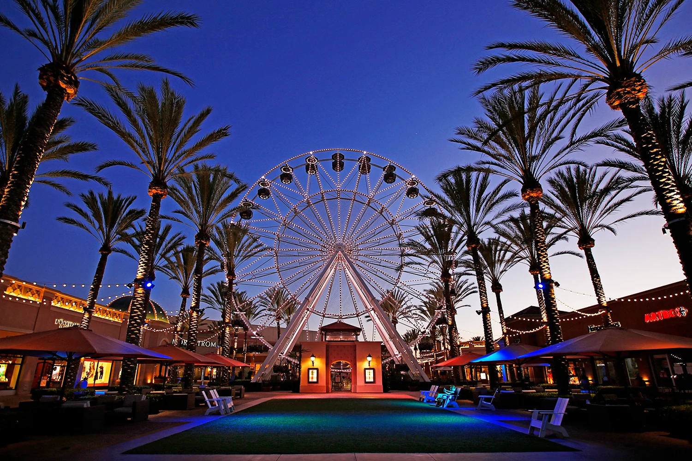

CITY FACTS:
the city’s population: 314,550 (2023)
the year the city was incorporated: 1971
the region of the state in which the city is located: Southern
California
the classification of the city: urban, suburban, and/or rural:
Urban/Suburban
the average income level of the city compared to the rest of the
state: $114,027, compared to CA median household income of $91,551
